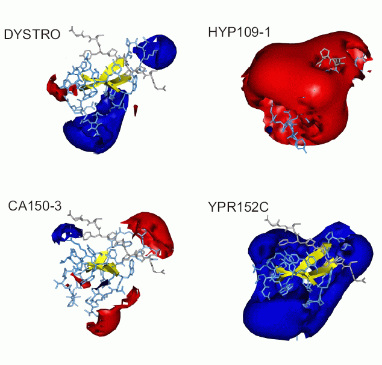
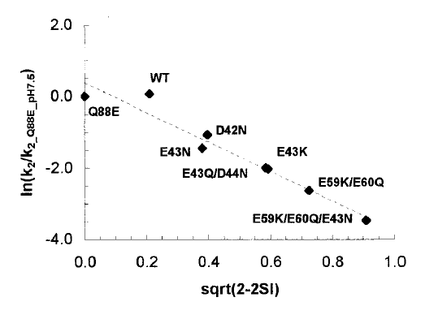
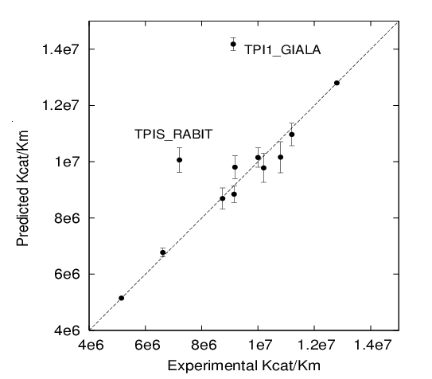

Application
examples of PIPSA
(Protein Interaction Property
Similarity Analysis)
WW
Domains
Plastocyanin
mutants
analysis
Triose phosphate
isomerase kinetic
parameter predictions (qPIPSA)
Schleinkofer K. ,
Wiedemann
U. , Otte l., Wang T., Krause G., Oschkinat H. and Wade R.C.
Comparative Structural and Energetic
Analysis
of WW Domain/Peptide Interactions.
J. Mol. Biol. 2004, 344, 865-881.
WW domains are small globular protein
interaction
modules found in a wide spectrum of proteins. They recognize their
target
proteins by binding specifically to short linear peptide motifs that
are
often proline-rich. To understand the determinants of the ligand
binding
propensities of WW domains, 42 WW domains were analyzed to derive
quantitative
structure-activity relationships .
From a protein interaction property
similarity
analysis (PIPSA) of the WW domain structures, a structure-based
classification
of WW domains is proposed that expands the existent
sequence-based
classification scheme.

Representatives
of the different classes of WW domains have markedly different
electrostatic
potentials:

The
electrostatic
potential is an additional distinguishing feature of WW domains not
captured
by sequence analysis. It is conserved among those WW domains
interacting
with peptides containing charged residues. Consistent with the opposite
charge of the specificity determining residue within the ligand
(arginine
and phospho-serine/phospho-threonine respectively), the Ra- and
Rb-group
members show a conserved negative potential whereas the poS/poT-group
members
show a conserved positive potential. On the other hand, the hydrophobic
potential is equally important for ligand binding for all WW domains
and
thus cannot be used as a distinguishing feature.
The results of application of pipsa
analysis
to the models of WW domains can be found
here
(151 MB) .
Plastocyanin
mutants
analysis
De Rienzo, F., Gabdoulline,R.R.,
Menziani,M.C.,
De Benedetti, P.G. and Wade,R.C.
Electrostatic Analysis and Brownian
Dynamics Simulation of the Association of Plastocyanin and Cytochrome F
Biophys. J. (2001) 81, 3090-3104.
The oxidation of cytochrome f by the
soluble
cupredoxin plastocyanin is a central reaction in the photosynthetic
electron
transfer chain of all oxygenic organisms. Here, two different
computational
approaches are used to gain new insights into the role of molecular
recognition
and protein-protein association processes in this redox reaction.
A comparative analysis of the computed
molecular electrostatic potentials of seven single and multiple point
mutants
of spinach plastocyanin (D42N, E43K, E43N, E43Q/D44N, E59K/E60Q,
E59K/E60Q/E43N,
Q88E) and the wt protein was carried out. The experimentally determined
relative rates (k2) for the set of plastocyanin mutants are found to
correlate
well (r2 0.90 0.97) with the computed measure
of
the similarity of the plastocyanin electrostatic potentials:

This
approach
allows to relate similarity indices to observable association
rates.
Application of PIPSA to derive this correlation can be downloaded here
(10 MB) .
Triose phosphate isomerase kinetic parameter
predictions (qPIPSA)
Gabdoulline RR, Stein M, Wade RC
qPIPSA: Relating Enzymatic Kinetic
Parameters and Interaction Fields
Januray 2007, Submitted
qPIPSA is for quantitative Protein Interaction Property Similarity
Analysis. In this analysis, molecular interaction fields, for example,
electrostatic potentials, are computed from the enzyme structure.
Differences in molecular interaction fields between enzymes are then
related to the ratios of their kinetic parameters. This procedure can
be used to determine unknown kinetic parameters when enzyme structural
information is available and kinetic parameters have been measured for
related enzymes, e.g. orthologues from other species, or under
different conditions, e.g. a different pH. The interaction of the
enzyme with other molecules is not modeled and is assumed to be similar
for the proteins compared. The protein structure modeling protocol
employed ensures that differences between models reflect genuine
differences between the protein sequences, rather than random
fluctuations in protein structure. Provided that the measurement
conditions and the protein structural models are consistent,
correlations between interaction fields and kinetic parameters can be
established for sets of related enzymes or for an enzyme under a range
of environmental conditions. Outliers may arise due to variation in the
importance of different contributions, such as protein stability and
conformational changes, to the kinetic parameters. The qPIPSA approach
can assist the estimation and validation of kinetic parameters, and
provide insights into enzyme mechanism.

Application of PIPSA to correlate Triose phosphate isomerase kinetic
parameters with the electrostatic potential differences in the active
site can be found
here
(60 MB file).
Razif
Gabdoulline, 2007